Once you have made your changes, you may also set specific options for the form and form fields, as well as configuring the Form Name, Description, Instantiated Form Name and other form properties. Use the Form properties page to display these options.
The properties of the Form definition are configured via a series of tabs arrayed vertically along the left side of the Form Definition screen. Each of these tabs is discussed below.
The Properties tab enables you to change the default behavior of the form. We will discuss all of the existing properties, but keep in mind that some properties are only visible to installations that have the appropriate licensing. If your license does not cover a property, such as the auditing or scripting properties, you will not see them in the product UI.
The options on this tab include the ability to change default styles and how to handle validation errors. Associating processes with Forms allows the Form to reference steps and other information in that process. The Default Styles control the stylized borders and colors around Form controls, depending on the controls’ status (enabled, required, disabled, or error).
Instantiated Form Name
The Instantiated Form Name property determines the name that will be given to each Form instance. One should usually use System Variables here, so that the Form’s instance’s name is relevant to the specific instance. As a best practice, every form should be given an Instantiated Form Name that is unique to that instance, for easier searching in Knowledge Views.
Form Fields Enabled/Disabled
You have the option to determine the default setting for whether form fields are enabled or disabled, using this dropdown control. The control offers four settings:
Form Fields are enabled by default: All form fields are enabled by default.
Form Fields are disabled by default: All form fields are disabled by default.
Form Fields are enabled only when...: All form fields are enabled only when a user-defined condition applies. Selecting this option enables you to define a condition or set of conditions that, when true, enable the form fields.
Form Fields are disabled only when...: All form fields are disabled only when a user-defined condition applies. Selecting this option enables you to define a condition or set of conditions that, when true, disable the form fields.
These form level-settings can be overridden in the properties for individual controls. For example, if you select "Form Fields are disabled by default", but set an individual control to be enabled, the control setting will override the Form option setting you choose here. The general rule to remember when setting an enabling option is that the setting at the lowest level always wins.
Entire form is read-only when
Form definitions can be configured as "read-only". Selecting this option enables you to define a condition or set of conditions that, when true, will cause the form will act as though the user does not have modify permission on the form (whether or not that would otherwise be the case). An open form in "read-only" state will not trigger form locking. Unlike the option to enable form fields, this option overrides any "enabled" settings at the control level. The data contained in a read-only form cannot be edited, irrespective of the enabled/disabled settings that might be set elsewhere.
Automatically start this process after Form is submitted
The primary method for starting a process in Process Director is to call the process from a Form when the Form is submitted. This option defines the process that will be started, and the Object Picker control allows you to choose either a Workflow or Process Timeline. Once you have selected the process you desire, then every time a new instance of the Form is submitted, the selected process will start, and the Form and its data will be attached to that process.
Workflows Associated with Form (optional) / Timelines Associated with Form (optional)
You have the ability to associate multiple Workflows or Process Timelines to a Form, so that data can be passed between those associated processes and the Form.
Default Groupname for Form Instances
You can set a custom Group Name for each instance of the Form. This enables you to group Forms by department, process type, etc. When a process is started that automatically adds a Form, it will use the Default Groupname... property configured on the Form definition.
Form Script (optional)
You may associate a custom script with a Form to perform specialized, programmatic functions. This feature requires the SDK license.
Automatically create an instance of this case (optional)
For Case Management applications, this option enables you to select the Case Definition for which a new instance will be created when the Form is submitted. When a Case definition is selected, the Form will not only create the Case instance, but will also set some or all of the Case properties from controls on the Form.
Select a Content List background image for this form (optional)
This option enables you to select an image you have uploaded to the Content List, and will use that image as a background image for the Form.
Select a background image from this list for this form (optional)
This option enables you to select an image from a dropdown control that contains a number of stock background images, and will use that image as a background image for the Form.
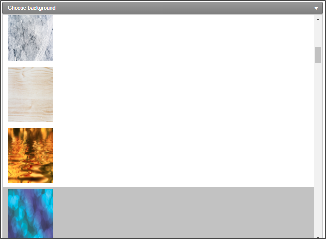
Below the image dropdown, an additional Background Image Sizing dropdown enables you to specify how the background image will appear on the form. The following options are available:
Cover: The image will expand to fill the entire page background.
Center: The image will appear in its actual size, centered on the page vertically and horizontally.
Tile: The image will appear in its actual size, aligned to the top left of the window, and will tile vertically and horizontally.
Tile X: The image will appear in its actual size, aligned to the top left of the window, and will tile along the X-axis only.
Tile X: The image will appear in its actual size, aligned to the top left of the window, and will tile along the Y-axis only.
Finally, an Opacity Level property enables you to set the opacity percentage by changing a slider value from 0 to 100.
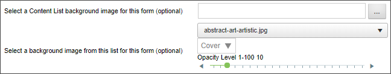
This slider will set the opacity of the form, not the background image. The form background displays above the page background that contains the image, so, the higher the opacity level, the more opaque the form background becomes, and the more the background image is obscured. In the example below, the opacity level is set to 50, i.e., 50% opaque.
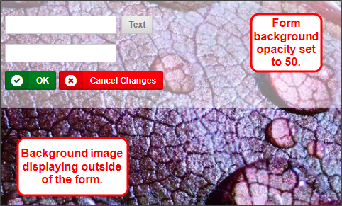
Form Lock Group (Optional)
This is an advanced locking feature. Entering a value in this box will create a form lock group for the form, so that multiple locks can exist at once on a form instance. This feature is an expansion of the existing Form Locking functionality. Rather than locking the form any time a user is viewing it, the Lock Group allows the administrator to add additional conditions that will lock the form only when those conditions are met. This enables concurrent tasks or users assigned in parallel to a task to access the form simultaneously without locking it. This does have the inherent risk of one user saving over another’s changes if multiple people have it open and don’t meet the conditions of the Form Lock Group, similar to the existing risks when locking is not being used.
So, let's look at an example. Let's say that we set the optional Form Lock Group to {TASK_USER,FORMAT=userid}. In that case, the form will be locked only when a user in the same task accesses the form. Users who are in other tasks would still be able to edit the form, because the lock group wouldn't apply to them.
Display validation errors with alert boxes
The default method of displaying validation errors on a Form is to display a text message at the top and bottom of the Form, which will appear as a yellow error banner. Selecting this option also causes the validation error to appear in an alert dialog box.
Do not show this object in 'Items I Can Run' Knowledge Views
Selecting this option removes the Form from the Items I can Run Global Knowledge View.
Use Visual Basic for scripts (leave unchecked for C#)
The default programming language for scripts in Process Director is the C# programming language. Selecting this option enables the use of Visual Basic.NET as a scripting language for this Form.
Audit Form field changes
Users of Cloud Installations, on-premise installation with the Subscription license, or on-premise installations with the Compliance Option, have the ability to maintain a record of every change made to Form fields during the process. Selecting this option enables field-level auditing for the Form. This auditing information can be reviewed in the properties of the Form Instance, by viewing the Audit Viewer tab. Fully-detailed auditing information can also be accessed in the Audit logs, or, if configured for use, the IT Admin section's Audit Logs page.
Enable Form Locking
Form locking prevents other users from making changes to a Form instance once a user opens it. This prevents multiple users from overwriting each other's changes. Selecting this option enables form locking.
Display warning if user Cancels form changes
Selecting this option will display a warning before closing the Form when users cancel their changes.
Show disabled fields as text
Selecting this option will display only the text in disabled fields, rather than displaying the actual control. The value in the control will be output to the Form as simple text, as if the control did not exist.
BP Logix recommends that you use this setting.
Show only the first validation error (instead of all)
In a Form contains multiple validation errors (i.e., field values that do not meet the criteria for acceptable data), only the first validation error will be shown when the validation fails if this option is checked.
Hide disabled buttons
Selecting this option will keep disabled buttons from appearing on the Form when it is displayed.
Remove form from existing Case on submission
This option tells Process Director to remove a new form instance from an existing case instance during submission if it is already in a case instance.
When a new Form instance is created from inside an existing case, the default behavior is to add the new Form to that case. Checking this option changes the default behavior so that the new form Instance is automatically transferred to a new case instance. Any case properties from the existing case instance that have been applied to form fields will remain applied. This enables the new form to be displayed with the case properties from the existing case instance, but when the form instance is submitted, it will only set properties in a new case instance that is created on submission, without altering the properties of the existing case instance.
Enable Form Data Cache
This option implements form data caching for the form. For an explanation of what Form Data Caching is, and how it works, please see the Form Data Caching topic.
URL Customization
For users of Process Director v5.13 and higher, this section enables you to customize the Form URL to use to access the form. This section assists you with constructing the URL to use for users who access the form via URL only. It does not change the operation of the form when accessed through the Process Director UI. You can then copy the Form URL and paste it into a hyperlink from an HTML document, such as an intranet portal page, outside of Process Director. This section of the form only changes the Form URL that is displayed. It has no other effect of the form's operation. The sole purpose of this section is to edit the URL so that you can copy and paste it for use outside of Process Director. Changing the options in this section will, when the Form definition is updated, update the Form URL displayed at the bottom of the tab.
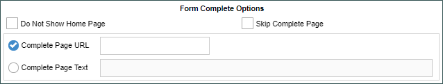
The properties available in this section correspond to some of the commonly used Form Definition URL parameters documented in the Forms topic, and which are included in the default Form URL displayed at the bottom of the tab.
Do Not Show Home Page: Controls whether the home page should be opened when the link is clicked.
Skip Complete Page: Controls whether the complete page should be displayed when the form is submitted.
Complete Page URL: Specifies the URL of the page that should serve as the complete page when the form is submitted.
Complete Page Text: Specifies a text message that should be displayed when the form is submitted, rather than redirecting to a complete page.
This section enables you to quickly change the default styling of various fields on the Form, based on the status of the field. For each field status, you can choose a default style from the dropdown, or type in any desired CSS styles manually. You can alter the styling for the following field status types:
Enabled
Disabled
Required
Error
Additionally, the Additional Form Body CSS Styling property will accept CSS Stylesheet Class syntax that you can apply to any element on the Form. You would simply enter the CSS styling in the same way you would in a CSS stylesheet, e.g.:
body { color: #FF0000; font-family: Arial, Geneva, Helvetica, sans-serif; }
For Process Director v5.31 and higher, a custom variable, EnableFormFieldDownload, will display a link at the bottom of this tab labeled Download Field List, to enable users to download an Excel Spreasheet containing the list of fields. This feature is primarily relevant to the use of the separately-licensed Mobile Application Component.
Clicking on the Edit tab will, depending on the format of the form template, open one of two different screens. Form templates created in Word or ASCX format will present the following screen. Use of this screen is documented in the Word Form Builder topic.
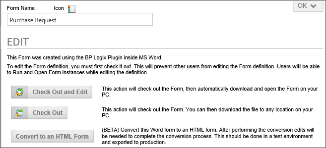
Forms created using the Word Form Builder will provide an option to convert the Form from Word to the Online Form designer, via the Convert to an HTML Form button. Clicking this button will create a new Form version for the Word Form prior to creating the Online Form Designer version. You can, if you desire, revert to the Word Form from the Versions tab.
Please note that Forms created as a custom ASCX control cannot be converted to an Online Form Designer Form, and the Convert to an HTML Form button will not be displayed in the Edit tab.
Forms created with the Online Form Designer will automatically open the Online Form Designer's editing screen, which is documented in its own topic.
The tab displays a list of all the controls (i.e. form fields) on the Form definition. When you add a control the the Form Template, the corresponding Form data field will automatically be created, and the control will appear in the list of controls on the Form Controls tab after the Form Template is checked in.
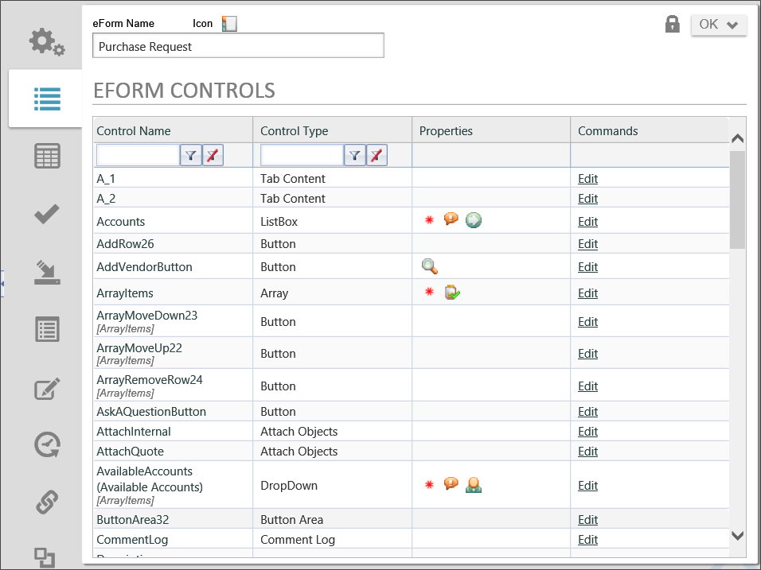
Properties can be configured for these form controls (fields) by clicking on the Edit link, which will open the Form Field Properties dialog box for the field.
The Form Field Properties page allows you to configure the properties of the form field: you can configure the form field’s tooltip, its friendly name, the minimum and maximum values it can hold, as well as under what conditions the form field will be enabled, viewable, or required. You can also configure the form field’s default value, data type, and attribute to which it links. Different form field types may have some subset of the properties below, as not all field types have the full set of properties. In general, however, the full set of form field properties are listed below.
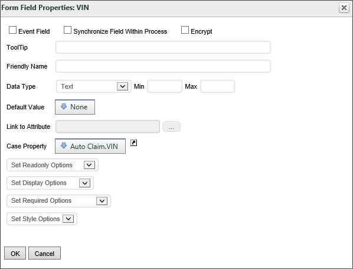
The form field properties include:
Event Field
If checked off, this form field will trigger an event when interacted with. Events can be used to update the form by triggering custom tasks or custom form scripts.
Synchronize Field Within Process
If checked, this field will synchronize values will all other form fields that have the same names but are on different forms with different definitions in the same Process. When the value of a synced form field is updated, the value will be synchronized with all other form fields with the same names in the Process, whether or not those form fields are also marked as synchronized. However, if a form field’s value is updated and that form field is not marked as a synchronized field, it will not update the values of other fields with the same names in the process, even if those fields are marked as synchronized.
If a column in an array is marked as synchronized, the number of rows and the content of that column will be synced with all other arrays in the process containing a column of the same name. This means that adding and removing rows in an array with a synced column will also add and remove rows in other arrays in the process with columns of the same name. Because synchronized array fields are so powerful, caution is recommended when using synchronized fields with arrays. Instead, we recommend alternatives, like the Copy Form Data custom task.
Prior to Process Director v4.04, field synchronization would only occur on form submission, but not when the Form was saved via a Save button, and not submitted. From v4.04, synchronization will occur any time the Form is saved, even if the Form is not submitted.
ToolTip
When moused over, the form field will display the text entered into this text box as a tooltip.
Friendly Name
Because Form Field Names have some unavoidable constraints in how they are named, the field names may not be particularly friendly for users. The Friendly Name property enables you to configure a different name that will be displayed to end users in places like Knowledge Views, without worrying about the constraints that you have to adhere to when you place a field on the form template. For users of Process Director v5.12 or higher, using a Camel Case value (e.g., MyField) for the field's Name will automatically create a Friendly Name based on the Camel Case Name (e.g., My Field).
Link to Dropdown Object
This enables you to fill a Dropdown field with the content from a dropdown object. You can link multiple dropdowns to dropdown objects, which allows you to reuse dropdown objects in multiple forms.
Data Type
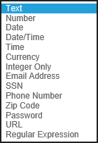
Setting the data type will enforce that the form field accepts data formatted as the appropriate type. The Data Type can be any of the following:
Text: this option allows for arbitrary text to be entered into the form field
Examples: “foo”, “bar”
Number: this option ensures that the form field contains a number (either with or without a decimal)
Examples: “10”, “9.75”
Date: this option ensures that the field contains a date. Dates must be in a format that can be interpreted by .NET.
Date/Time: this option ensures that the field contains a date and time. DateTimes must be in a format that can be interpreted by .NET.
Time: this option ensures that the field contains a time, which can be in any of the following formats. Times must be in a format that can be interpreted by .NET.
Currency: this option ensures that the contents of the field can be interpreted as an amount of currency
Examples: “22”, “22.32”
Integer Only: this option ensures that the field contains an integer. It also allows you to specify a minimum and maximum value that the integer can be.
Examples: “1”, “394221”
Email Address: this option ensures that the field contains an email address. As a user warning, email addresses should not have any trailing spaces, or they will be rejected as invalid.
SSN: This option ensures that the field contains an American Social Security Number, with or without dashes.
Examples: “123456789”, “123-45-6789”
Phone Number: This option ensures that the field contains a phone number. Most formats people usually use to type phone numbers will be accepted, as this data type will ignore most special characters, but match on specific digits and patterns.
Examples: “(123) 456-7890”, “+1 123-456-7890”, “123-4FO-OBAR x 4321”
ZIP Code: This option ensures that the field contains an American ZIP Code. The ZIP code can contain only five digits or all nine digits.
Examples: “12345”, “12345-6789”, “123456789”
Regular Expression: This option enables you to set a format for data entry for the field, e.g., a Canadian Postal Code format like "M5W 1E6".
Concealed Text: Introduced in Process Director v5.12, this field type replaces the "Password" datatype, and will hide the text in the field. Additionally, the behavior of the "Password" data type was changed to check the password strength according to the system settings and return an error if the password strength of the entered value is not strong enough. This change will automatically convert all form fields that were previously configured as a Password data type to Concealed Text. Fields set to this type will display values with a set number of asterisks (****) when displayed in a Knowledge View, in a disabled form field, etc.
Changing Data Types
Occasionally, it may be necessary to change the data type of a Form Field. For instance, one common mistake implementers make is setting the data type of a field like a Zip Code to "Number", because the field contains only digits. The natural assumption implementers make is that, since the field contains only digits, it must be a number field. This is generally incorrect, since the best practice is that if you are not going to do math on a field value it is not a number. Moreover, treating fields like Zip Codes as numbers will cause them to sort differently (in numerical order) than they would sort if they were text (alphabetical order).
Often, problems don't become apparent until a number of processes have already been started, so you not only wish to change the data type for future instances of the Form, you also want to change the data type for past instances as well. Happily, Process Director enables you to make the change retroactive by following the procedure below:
Place the mouse pointer in the workspace tab area at the top of the page, and click the right mouse button. This will place the page in Debug mode, and a dialog box will appear notifying you that the mode has been changed. Click the OK button to close the dialog box.
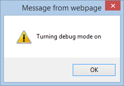
Open the Form Definition and click the the Form Controls tab. In Debug mode, the Form Controls Tab will look slightly different.
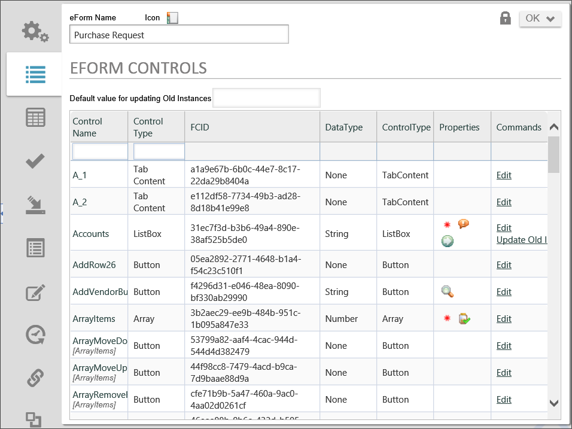
Click the Edit link to open the field properties dialog box for the field you'd like to change.
Change the data type of the field to the desired data type and click the OK button to close the field properties dialog box.
Click the Form definition's Update button to save the change to the Form Definition.
In the Commands column of the Form Properties tab, click the Update Old Instances link. A confirmation dialog box will appear.
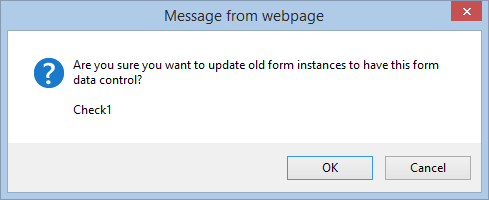
Click the OK button to confirm the change, close the dialog box, and update all previous Form Instances to the new data type for the field.
An additional debugging option exists to convert existing form data from a text field into a number or date field, as appropriate. This is available in the troubleshooting tab in the IT Admin while in "debug mode" and is called "Update All Form Data to match Controls". This will fix an issue that arises when trying to generate SQL Views that include text fields that stored integer or date data. Earlier version of Process Director stored this data as a string. This option will transfer the data from a string field in the database into the appropriate number or date fields. This does not affect the usual operation of Process Director, and is relevant only when trying to include these fields in a SQL View.
For v5.32 and higher, an additional debugging option, which will appear next to form fields that are setting meta data attributes, will cause the system to update the category and attribute data on all old form instances using the form data on the instance.
Min/Max
Certain data types enable you to set a minimum or maximum value for the data the field will accept. This behavior will be different for text or numeric fields.
For numeric fields, setting these properties will limit data entry to the values that fall within the numeric range specified in the Min/Max properties, e.g., a Max value of 10 will only allow a numeric value smaller than or equal to 10 to be entered.
For text fields, the length of the text data will be limited to the values specified in the Min/Max properties, e.g., a Max value 10 will only allow users to enter a text string that is 10 characters long or less.
Default Value
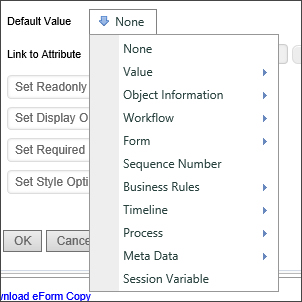
You can specify the default value of a form field. The Default Value dropdown allows you to select from a list of common default values, like Workflow Instance Names or the results of Business Rules. You can also specify the default be set to a custom value or result from a System Variable Tag.
Link to Attribute
You can use this picker control to set a Meta Data Attribute from the Form Field.
Case Property
For Case Management applications, setting the property will save the field as a Case Property, rather than a Form field. Case Management Forms often contain a mix of Form Fields and Case Property fields. Case property fields do not need to be replicated between forms. The Case Property is part of the shared data context that links all Forms to the Case instance. Once a case property is set, that property is available for any other Form in the case to get or set the property.
Some controls, such as radio buttons and dropdowns, can have both a value and a display string. Process Director will save both values in the case of those controls, and, by default, the case property returned will be the value of the control. The display string, however, can be returned via a Case system variable, using the syntax:
{CASE:PropertyName, format=string}
So, in any instance where you will want to evaluate the display string, rather than a value, such as in a condition for a Business Rule, you'll need to evaluate the System Variable as a string, using the syntax above. If you select the case property from the dropdown menu in the Choose System Variable dialog, the case property will return the value, and not the display string.
Set Readonly Options
This option gives you the ability to Enable or Disable a form control including the sections and collapsible sections. You may also Enable or Disable based on a condition using the Condition Builder.
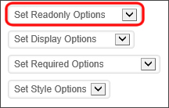
Set Display Options
This option gives you the ability to Show or Hide a form control including the sections and collapsible sections. You may also Show or Hide based on a condition using the Condition Builder.
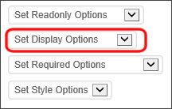
Set Required Options
This option gives you the ability to set the form control as required or not required including the sections and collapsible sections.
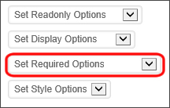
You may also set the form control as required or not required based on a condition using the Condition Builder.
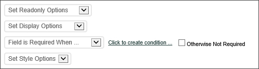
Validation and required fields work together in an important way, because Process Director will only validate a field if it contains a value. Process Director will not validate a blank field, even a field that you want specifically formatted using a Regular Expression. Setting a field as required tells Process Director that the field must contain a value, and will impose validation on a blank field. The fact that you specify a data type or regular expression for a field does not indicate to Process Director that the field must contain a value. So, if you want to ensure that Process Director validates a field, even if it's blank, then the field must be a required field.
This tab allows Form Custom Tasks to be mapped to different events that occur when the form is run. The Form Custom Tasks provide enhanced functions to perform a variety of actions, such as to connect to external data sources or to manipulate data on the form.
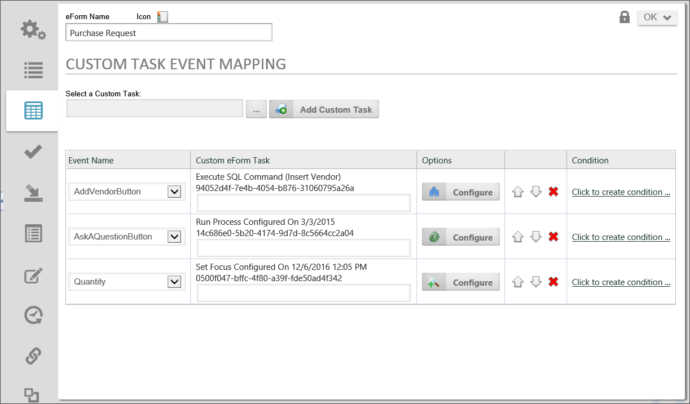
Each custom task that you map, is mapped to an event that is raised by the Form. The events that are available will appear in the dropdown control that appears in the Event Name column. The Form events that can be mapped to a custom task, and the order in which the events will be called, is displayed in the table below.
EVENT
DESCRIPTION
specific form event
This allows you to tie a custom task to a specific form control that is marked as an event field. Every control that is marked as en event field will appear in the dropdown.
[Event]
Any event from the form (a button, an event field being changed, etc.) will call this event.
[Form Creation]
This event is only called once per form instance to initialize the form data.
[View State Init]
This event is called every time a form is opened. It will not be called for postbacks on the current view.
[Before Conditions]
This event is called prior to evaluating the form conditions (which control the visibility, the required setting, the enabled setting, etc.).
[After Conditions]
This event is called after evaluating the form conditions.
[Before Validation]
This event is called if the user hits a complete button, prior to the form validation.
[After Validation]
This event is called if the user hits a complete button, after the form validation.
[Form Completed]
This event is called if the user hits a complete button, and the validation was successful.
[Form Display]
This event is called prior to displaying the form. This will be called on every postback, and when the form is first displayed.
The order of the events is very specific. For example, If the user changes a dropdown form field which is an event field, the custom tasks mapped to events in the following order will be called if configured: specific form event, [Event], [Before Conditions], [After Conditions], [Form Display].
If a user hits the OK button on a form, and the validation succeeds, the events will occur in this order: [Event], [Before Conditions], [After Conditions], [Before Validation], [After Validation], [Form Completed].
If a user hits the OK button on a form, and the validation fails, the events will occur in this order: [Event], [Before Conditions], [After Conditions], [Before Validation], [After Validation], [Form Display].
Mapping an event to a Custom Task
Click on the Build button for the Custom Task Picker to open the Choose Custom Task dialog box.
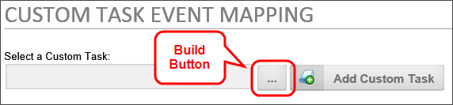
From the Choose Custom Task dialog box, select the Custom task you want to map. When you select the Custom Task, the Choose Custom Task dialog box will close and the name of the Custom Task will appear in the text box of the Custom Task Picker. Click the Add Custom Task button to add the Custom Task to the Form.
The Custom Task Event Mapping tab will now display a new line containing the Custom Task to be configured.
From the dropdown in the Event Name column, select the desired event to tell the Form definition to run the selected Custom Task when the event runs.
We now need to configure the Custom Task by clicking on the Configure button to open the configuration dialog box for the Custom Task.
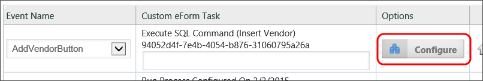
Each Custom task has its own, unique configuration dialog box. See the Custom Tasks documentation for information specific to configuring each Custom task. When you are finished configuring the Custom task, click the OK button to save your configuration changes and close the dialog box.
Each Custom Task mapping row contains a Condition column, from which you can use the Condition Builder to create an additional condition to meet before the task is run by clicking on the Click to create condition... link.
Each row can be ordered in the list of mapping rows by clicking one of the arrow icons to move the row up or down. The row can be deleted by clicking the red "X" icon. Process Director will execute the Custom tasks in the order, from top to bottom, in which they are placed in the list.
The tab allows you to add custom validation to the form. By clicking on the Add Validation Rule button you can add your own validation message. You can create a condition under which each validation rule will run. If that condition is met—or, not met, as you desire—you can display a custom message.
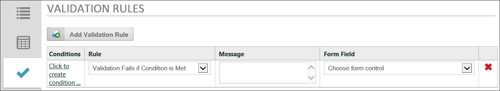
Some special considerations apply when using validation rules to validate fields in an array. Process Director uses slightly different logic for array validation, and that logic may change depending upon the operator used to validate the array values. In the examples below, there are a number of possible validation rules to assist you in understanding the logic used when validating arrays. In these examples, an array field will be designated as an array column with the name of Col1, Col2 etc., while non-array fields will be designated as Field1, Field2, etc.
Some general rules need to be addressed first, though. Any time you create a validation rule, you are evaluating a value on the left side of the operator with a value on the right side of the operator. Process Director will respond differently depending on whether you are trying to compare a non-array field with an array field, on what side of the operator the array field is used, or whether you are comparing two array fields.
Comparing Non-Array and Array fields
The way process Director compares array fields with non-array fields is different, based on whether the array is on the left or right side of the operator.
If the right side of the operator is an array column, the evaluation will occur against a comma-separated list of all values in the column, e.g., "1,2,3".
If the left side is an array column field and the right side is a non-array field, the evaluation will occur for the column field for EACH row, and each condition is tested against the field value.
Let's assume we have an array field, named Col1, containing three rows, with the following values:
Row 1: a
Row 2: b
Row 3: c
Let's also assume that we have a non-array field called Field1, with a value of "b".
If we want to do a comparison with Field1 on the left side of the operator and Col1 on the right side, Process Director will return the value of Field1 as "b", and Col1 as "a, b, c". As a result, some operators will generally not work. In general, Field1 = Col1 (b = a, b, c), will generally return "false", while Field1 <> Col1 (b <> a, b, c) will generally return "true". Similarly, Field1 Contains Col1 will generally return "false". On the other hand, Field1 In Col1 will validate properly, because "b" is in "a, b, c".
Notice the liberal use of the word "generally" in the preceding paragraph. You can make comparisons using the "=" or "<>" operators if the non-array field contains comma-separated values. For instance, if you put the value "a, b, c" in Field1, then Field1 = Col1 will return true, because "a, b, c" = "a, b, c". You're essentially comparing two comma-separated lists that both have the same value. (Actually, you need to be sure to put spaces between the values in Field1, because "a,b,c" won't validate, though "a, b, c" will.)
The logic for comparisons works differently if the array field is on the left side of the operator, and the non-array field is on the right. In that case, process Director will parse each array row for the comparison, which will provide the following results:
VALIDATION RULE
FIELD VALUES
DESCRIPTION
Col1 In Field1
Col1: X 2 Y
Field1: 2
Is true if ANY row in Col1 is IN Field1. For example, this is “true” because col1 (row2) is in Field1
Col1 Not In Field1
Col1: 2
3 2
Field1 = 2
Is true if ANY row in col1 is IN NOT IN FIELD1. For example, this is “true” because col1 (row2) is NOT in Field1
Col1 Contains Field1
Col1: 1
22 3
Field1 = 2
Is true if ANY row in col1 contains FIELD1. For example, this is “true” because col1 (row2) contains Field1. In this case "22" contain "2"
NOTE: This is a text comparison NOT a numeric comparison.
Col1 Does Not Contain Field1
Col1: 2
3 2
Field1 = 2
Is true if ANY row in col1 does not contain FIELD1. For example, this is “true” because col1 (row2) does not contain Field1
Comparing Array Fields
Comparing two array columns works quite differently. In general, Process Director will compare the values in each row in the array. The operators for array comparisons will work in the following manner.
OPERATOR
COLUMN VALUES
DESCRIPTION
Col1 In Col2
Col1
Col2
1
2
2
X
3
Y
Is true if ANY value in Col1 is in ANY row of Col2. For example, this is “true” because the value in Col1/Row2 is in Col2/Row1
Col1 Not In Col2
Col1
Col2
1
3
X
2
3
1
Is true if ANY value in Col1 is NOT IN in ANY row of Col2. For example, this is “true” because the value in Col1/Row2 is not in Col2.
Col1 = Col2
Col1
Col2
1
1
2
X
3
Y
Is true if ANY value in Col1 equals the value in Col2 in the SAME Row. For example, this is “true” because Col1=Col2 in Row 1.
Col1 <> Col2
Col1
Col2
1
1
2
X
3
3
Is true if any value in Col1 is not the same as the value in Col2 in the SAME Row. For example, this is “true” because Col1 <> Col2 in Row 2.
Col1 Contains Col2
Col1
Col2
1
X
X2
2
3
Y
Is true if any value in Col1 contains the value in Col2 in the SAME Row. For example, this is “true” because Col1 contains Col2 in Row 2. Again, keep in mind that this is a text comparison.
Col1 Does Not Contain Col2
Col1
Col2
1
1
2
X
3
3
Is true if any value in Col1 does not contain the value in Col2 in the SAME Row. For example, this is “true” because Col1 does not contain Col2 in Row 2
Prior to Process Director v3.53, by far the most common Custom Task used on a Form was the Set Form Data Custom Task, which was configured on the Custom Task Event Mapping tab. For Process Director v3.53 and above, the Set Form Data tab will replace the Custom Task for setting the value of Form Fields. The Set Form Data Custom Task is still available if required, and will still work properly if you have existing projects that use it, but the vast majority of use cases will be satisfied by using the Set Form Data tab. The Set Form Data tab is easier to configure, will reduce the number of Custom Tasks required to configure a Form, and is easier to manage.
In a sample form, the tab will look similar to the one below.
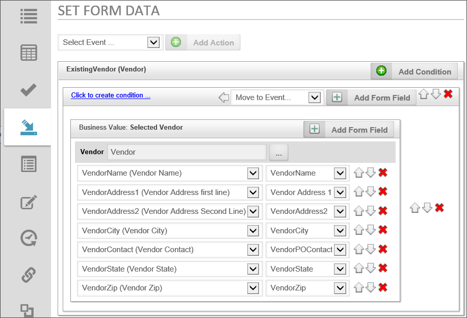
The Set Form Data tab is divided into a number of sections, with each section corresponding to a form event. The order in which the events appear on the tab is not indicative of when, or in what order, the events will fire. When form events fire—and in what order—are determined by where you are in the form's life cycle.
Both the standard form events (i.e., View State Init, Before Validation, etc.) and the event fields have a configuration section. For example, in the sample above, the ExistingVendor (Vendor) field is an event field that, when fired, will extract data from a Business Value. The value of the ExistingVendor (Vendor) field is passed to the Business Value as a parameter, in order to return the specific data for the selected vendor.
Adding a Set Form Data Field
Find the section that corresponds to the event you wish to configure. For this example, we will use the ServiceLevel field from our sample form, above.
Click the Add Condition button. A new mapping section for the condition will appear in the tab. You may optionally add a condition by clicking on the Click to create condition link, then using the Condition Builder to define the condition. If you do not define a condition, the Set Form Data action will occur every time the event fires.
Click the Add Form Field button. A new mapping row will appear in the condition section.
In the Form Field dropdown, select the Form field whose data will be set.
Repeat steps 3 and 4 as desired.
Select the new value for the Form control by using the Value ObjectPicker control.
Each row can be ordered in the list of mapping rows by clicking one of the arrow icons to move the row up or down. The row can be deleted by clicking the red "X" icon. Similarly, if you have multiple conditions for an event, the conditions can be ordered as well, so the condition evaluations will occur in the order you desire. Items can only be ordered inside their container section.
Working with Arrays and Business Values
When using the Set Form Data tab to assign form field values from a Business Value. Process Director will automatically group all field changes from a single Business Value into a single row.
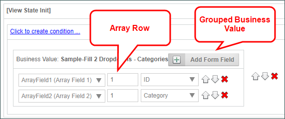
When setting the value, you can specify the row number if the field value to be set is contained in an array. If you do not specify an array row when setting data, Process Director will handle the Set Form Data action in different ways, depending on the data you are using to modify the array,
When using the Set Form Data tab with Business Value properties, the key thing to remember is that the default behavior when adding Business Value data to an existing array is to append new rows when a Row Number is not specified. In other words, if the array has two existing rows, then, when the event fires that retrieves Business Value data returns four rows, the array will expand to six rows when the four new rows are appended. If you wish to overwrite the existing array data, then the first thing you must do in the event is to set the array's value to "0", which will clear the array. The new data will then create the appropriate number of rows for the data returned.
It is possible to return data from multiple Business Values in the same event, and Process Director will concatenate the values from multiple Business Values into a single Array change. Process Director will append the number of rows that corresponds to the largest number of results from any Business Value Property in the same Condition Set. With Business Value Properties that return different numbers of results, the Set Form Data will set no data in fields in the appended Array rows that have no corresponding result. In other words, if one Business Value property set returns five rows, and a second returns four rows, then Process Director will append five rows to the array, but the fifth row will have no value from the second Business Value.
When returning data from two different business values, you have no way to ensure that the values from each Business Value corresponds with the data from other Business Values. In such a case, you are essentially retrieving two unrelated sets of data. So, if possible, you should retrieve data with multiple columns from a single Business Value.
The behavior with any other type of System Variable is quite different from the Business Value behavior. Instead of appending new rows, the Set Form Data event will apply the new System variable value to each row that is currently in the array, overwriting the existing data on every row with the new value.
Another common requirement for Forms is the need to fill dropdown controls with options from a database. With Process Director v3.75 and higher, a Fill Dropdowns Tab has been added to make it easier to fill dropdown controls with options from the database.
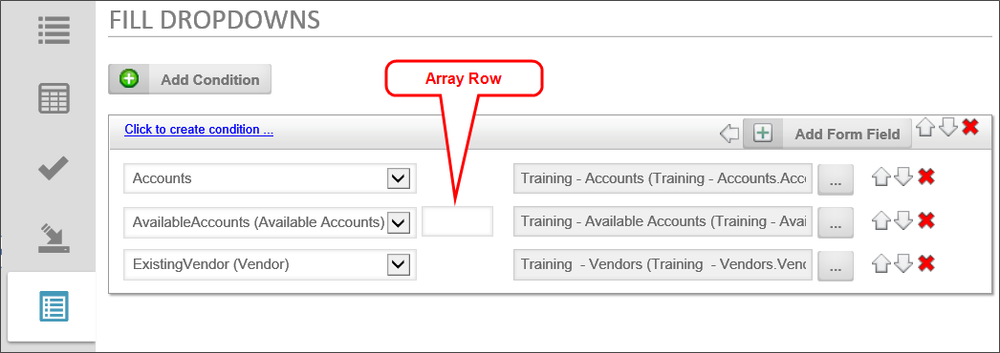
In previous versions of Process Director, the primary method of filling a dropdown was to use a Fill Dropdown from DB Custom Task on the Custom Task Event Mapping tab. While this method is still available, the addition of Business Values greatly simplifies the process, as Form Designers no longer need to know how to access the database, internal or external, from where the dropdown options are obtained. Designers now need only to select the appropriate Business Value to fill the dropdown. In the example shown in the screenshot above, the ExistingVendor dropdown is populated by the Vendors.Vendor Name Business Value that returns a list of existing vendor names.
Commonly, some dropdown controls are filled with data based on the value of other Form controls. To ensure that these data dependencies are properly implemented, all other Form Custom Tasks will run prior to the FIll Dropdowns tab elements being filled. Running the Fill Dropdowns items last enables all other possible data changes to be processed, so that dependent dropdown controls are filled with the correct options, based on the changed data.
Adding a Dropdown Fill
Click the Add Condition button to add the event condition to the Form.
From the controls dropdown, select the dropdown control to fill.
From the object picker, click the Build button to open the Choose System Variable dialog box.
From the Choose System Variable dialog box, select the Business Rule that returns the list of items you'd like to use to fill the dropdown, then click the OK button to close the dialog.
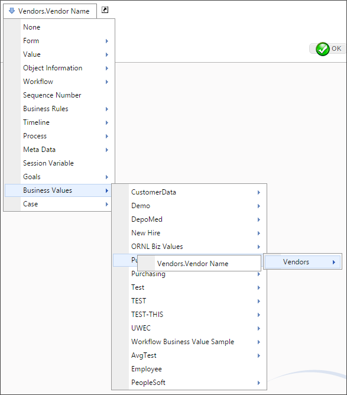
If you have multiple dropdowns to fill in the same event, the order in which you'd like the dropdowns to be filled can be changed by clicking the up or down arrow icons to re-order the dropdowns.
Just as with the Set Form Data tab, you can apply multiple conditions to multiple events for a complicated set of fill conditions.
When using a Business Value or Business Rule to fill a dropdown, duplicate values are automatically removed from the list of values used to fill the dropdown control's options.
This tab enables you to create a database view from the form data stored in the instances of this Form definition. The use of this tab is documented in the Create view (SQL) topic of the Database Guide.
History Tab
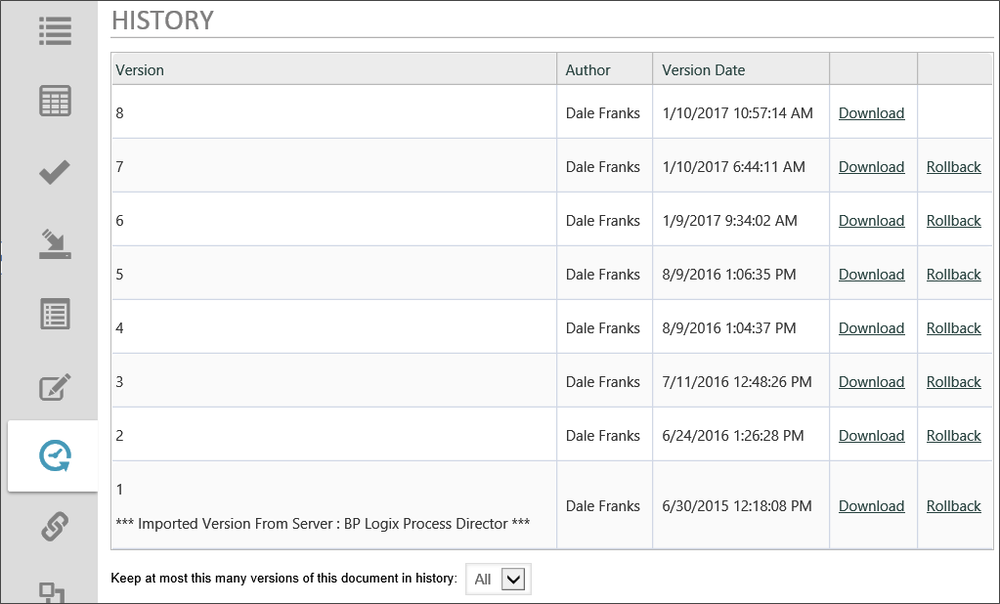
Process Director automatically keeps a history of Form edits. Each version can be downloaded, deleted, or applied to the Form to replace the current version.
Click the Download link to download the version, or the Rollback link to replace the current version with the version to which you'd like to roll back.
Meta Data categories and attributes can be assigned to each Form.
When you click the Assign Meta Data button, it opens a dialog box from which you can choose the Meta Data categories you wish to assign.
When you click the Add Meta Data to All Child Items button, all of the Meta Data assigned to the Form definition will be copied to all of the Form instances in addition to any Meta Data that is already assigned to the instances.
When you click the Replace Meta Data for All Child Items button,all of the Meta Data assigned to the Form definition will be copied to all of the Form instances and replace any Meta Data that is already assigned to the instances.
Process Director implements versioning for Forms, and each version consists of a complete snapshot of the Form. Each version can be downloaded, deleted, or applied to the Form to replace the current version.
To create a new version of the Form, first fill out the version properties.
Label
The name of the version object.
Object Version Description
A description of the versions purpose, changes made from previous versions, or other relevant information.
Once you've filled out the properties, click the Create New Version button. Process Director will record a snapshot of the version, and a new version row will appear at the bottom of the screen.
Links on each version row give you the option to apply the version as the current version in use, or delete it. If you choose to apply a version, Process Director will display a status screen to notify you of the success or failure of the attempt to apply it.
Process Director implements fine-grained permissions for all objects. For detailed information on how to set permissions, please see the Permissions topic.
 BP Logix recommends that you use this setting.
BP Logix recommends that you use this setting. An additional debugging option exists to convert existing form data from a text field into a number or date field, as appropriate. This is available in the troubleshooting tab in the IT Admin while in "debug mode" and is called "Update All Form Data to match Controls". This will fix an issue that arises when trying to generate SQL Views that include text fields that stored integer or date data. Earlier version of Process Director stored this data as a string. This option will transfer the data from a string field in the database into the appropriate number or date fields. This does not affect the usual operation of Process Director, and is relevant only when trying to include these fields in a SQL View.
An additional debugging option exists to convert existing form data from a text field into a number or date field, as appropriate. This is available in the troubleshooting tab in the IT Admin while in "debug mode" and is called "Update All Form Data to match Controls". This will fix an issue that arises when trying to generate SQL Views that include text fields that stored integer or date data. Earlier version of Process Director stored this data as a string. This option will transfer the data from a string field in the database into the appropriate number or date fields. This does not affect the usual operation of Process Director, and is relevant only when trying to include these fields in a SQL View.